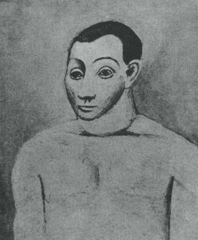

Bu kitabı yazmamın üstünden yirmi yılı aşkın bir süre geçti. 1965'te ilk yayınlandığında, heryerde değilse bile pek çok yerde kitaba saygısız, duyarsız, doktriner ve sapkın gibi suçlamalar yöneltildi. Centilmenler ülkesi olan İngiltere'deyse beğeniden yoksun denerek bir yana itildi. O zamanlar Picasso hâlâ sağ ve ününün doruğundaydı. Her yıl hakkında övgü dolu kitaplar ve yazılar yayınlanıyordu. Kitabıma gösterilen eleştirel tepkiler beni biraz şaşırttı. Ben, sanatçıya ve konu edindiğim kişiye duyduğum sevgiden kaynaklanan bir inceleme yazdığımı sanıyordum. Belki, aradan geçen yıllardan sonra, anlattığım öykünün kahramanına duyduğum sevgi daha açık bir biçimde görülür olmuştur.
Örneğin, bu inceleme Picasso'nun serveti üzerine bir tartışmayla başlıyor: Bu başlangıca, o zamanlar bayağı ve zevksiz bir tartışma gözüyle bakılmıştı. O zaman sözünü ettiğim servetin bugünkü değerini anlamak için en azından onla çarpmak gerekir. Sonra Picasso öldü. Hemen ardından, onun zengin mirasıyla ilgili acımasız davalar başladı. Daha yakınlarda, başka sanatçıların ölümlerinin ardından benzer acıklı olaylara tanık olduk: örneğin Salvador Dali'nin. Sanat yapıtları, herşeyden önce seyirlik yatırım nesneleri olarak kaldıkları sürece, bu gibi durumların ortaya çıkması kaçınılmazdır. Ama önemli olan, bu durumun gerektirdiği yabancılaşmanın, çoğu zaman önce yaşlanmış sanatçı tarafından acılı bir yalnızlık (banka kasasının yalnızlığı) biçiminde yaşanmasıdır. Bu yalnızlık, yazdığım incelemenin çıkış noktasıydı; şimdi kitabımı yeniden okuyunca üzerinde durduğum öbür noktaların çoğunda da zamanla haklı çıktığımı görüyorum.
Bununla birlikte, atlanmış bir nokta var. Bu kitabı yazarken Picasso’nun 1902 ilâ 1907 arasında yaptığı bazı yapıtlar üzerinde yeterince durmamışım. Daha açık söylersem, Kübizm anına bir an önce ulaşmak için sabırsızlanmışım. Bu erken döneme yeterli dikkati göstermemekle, sanırım, bir sanatçı olarak Picasso’nun temel doğası üzerine bir ipucunu kaçırmışım. Onun dehasının doğasını hissetmişim, yorumlar yaparak çevresinde dolanmışım, ama yeterince iyi formüle edememişim. Atladığım bu yeri belki şimdi tamamlayabilirim.

a. Picasso. Kendi Portresi. 1906
Resim, zamanın ve görülebilir olanın, bir çift halinde birlikte oluştuklarını bize anımsatan sanattır. Bunların birlikte oluştukları yer, olayların zamansal bir sıralanış içinde, görünümlerin de görülen bir dünya içinde birleştiği insan zihnidir. Zamanın ve görülebilir olanın böylece birlikte oluşmasıyla, varlıkla yokluk arasında bir diyalog başlar. Bu diyaloğu hepimiz yaşarız.
Picasso'nun 1906 tarihli Kendi-Portresi'ne bir bakalım. Bu resimde ne oluyor? Görünüşte olaysız olan bu imge bizi neden böylesine derinden etkiliyor?
Genç adamın yüzündeki ifade —yirmi beş yaşındaki bir adam için tipik olmaktan hiç de uzak olmayan bu ifade— yalnızlık, dikkatlilik ve arayıştır. Kaybın ve beklemenin kaynaştığı bir ifadedir bu. Ama bütün bunlar edebiyat düzeyinde nitelemelerdir.
Plastik açıdan ne olmaktadır? Baş ve beden görülebilir olmak için zorlamakta, algılanabilir bir biçim aramaktadır ve bunu henüz tam olarak bulamamıştır. Tam bulma noktasında, tam bu biçimin üstüne konma noktasındadır —çatıda bekleyen bir kuş gibi. İmgenin etkileyiciliği, görünür olmak için çabalayan bir varlığı temsil etmesinden gelir.
Eğretileme açısından bakarsak bu, oldukça sıradan bir deneyimdir. Olağanüstü olan burada Picasso'nun bu geçici ama neredeyse umarsızca ivedi görülebilir-oluş'u ifade etmek için gerekli resimsel araçları bulmasıdır (bu araçlara kazara çarpması ama her nasılsa bunları fark etmesidir). Onu Avignon'lu Kızlar'a kadar götüren ve ilk ön-Kübist yapıtlarını içeren 1902 ilâ 1907 yılların arasında Picasso, görülebilir olanı verme sorununu halletme yolunda ilk umutlarını ifade eden sayısız imge resmetmiş ya da çizmiştir: Görülebilir olma güvencesini —kısa süre önce olanaksız görünen bu güvenceyi— sunan bir hallediştir bu.
Kendi portresinde, bu neredeyse-görülebilir-oluş'u ifade etmeye yardımcı olacak resimsel araçlar vardır. Ten rengi boyaların dış çizgilerden taşışı, gölgelerin belli belirsiz, bitmemiş bir havayla resmedilişi, yüz hatlarının —bir vazo üstüne resmedilen figürler gibi— yüzün içine değil, daha çok üstüne resmedilmesi. ("Adem'in yaratıldıktan hemen sonraki, ama ilk soluğunu almadan önceki halini andırır.")
Aynı dönemden başka resimlerde Picasso, başka resimsel araçlar kullanmıştır. Bunları bilinçli olarak kullandığını sanmıyorum. Kullanılan araçlar, derin bir sezgisel inançtan, Picasso'nun bir ressam olarak giriştiği etkinliğin özünde yatan inançtan doğmuştur. Picasso görsel gerçekliği, kendiliğinden doğan kaçınılmaz bir şey olarak kabul etmiyordu. Tam tersine, gördüğü bir şeyin başka bir biçim de alabileceğini, görülebilir olanın ardında seçilmemiş yüzlerce görülebilirlik olanağı yattığını her zaman biliyordu.
Kimin tarafından seçilmiş ya da seçilmemiş? Elbette sanatçı tarafından değil; görsel biçim arayan varlık tarafından da değil; hatta yaratılış günleri sırasındaki Tanrı tarafından bile değil. Bu soru yanıtsız kalmaya mahkumdur; ama Picasso bu sorunun yanıtına yaklaşmak umuduyla, bizim bildiğimiz şekliyle görülebilir olan kesinlik kazanmadan önce görülebilirlik olanağı taşıyanla oynamaya hep devam edecekti. Picasso'yu icat etmeye iten ve bazen derin, bazen de yüzeysel olan cince itki, görülebilir olanın kökeninde rastlantısal olduğu temel inancından kaynaklanıyordu.
Picasso, sezgisel olarak, büyüme enerjisini varolandan ayırıyordu. Bu nedenle, ön-varoluş bilmecesiyle oynayabiliyordu. 1906 tarihli kendi portresindeki dokunaklılığı, bu portrenin bir ön-varoluş imgesi, konusunu doğurmak üzere olan bir portre olduğunu söyleyerek de betimleyebiliriz.
Ancak resimsel olanla açıkça söylenebilecek ya da sorgulanabilecek şeyleri sözcüklerle anlatmaya çalışıyorum. Oysa Picasso'nun sorgulaması ya da arayışı yalnızca sanat deneyimine dayanmıyordu. Bu sorgulama ya da arayış çok daha geniş başka insan deneyimlerine, özellikle de bedenin enerjisinin, normal fiziksel eğilimleri aştığı deneyimlere dayanıyordu. Picasso'nun, tutku ve acı imgeleri yaratmaya kendisini bu denli kaptırmış olması ya da bu imgeleri böylesine büyük bir yetenekle yaratabilmesi bundandı; enerjinin varolanı aştığı imgeler, varolanın ve onda bulunduğunu kabul ettiğimiz eğilimlerin nasıl hiçbir zaman tamamlanmamış ya da bitmemiş olduğunu açığa çıkaran imgelerdi bunlar.
Picasso, bitmemiş olanın ustasıydı; bitmemiş sanat yapıtının değil, bitmemiş insan deneyiminin ustası. Resim sanatının tümüyle varlıkla yokluk arasındaki diyalogla ilgilendiğini kabul edersek, en derin noktasında Picasso'nun sanatının, konumunu bu ikisinin birleştiği eşikte, varoluş'un, henüz başlamış olan’ın, bitmemiş'in kapısında bulduğunu söyleyebiliriz.